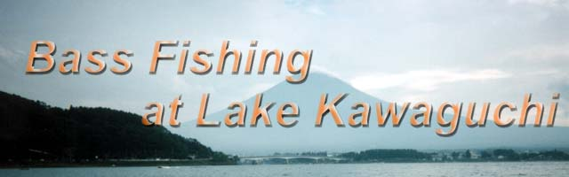
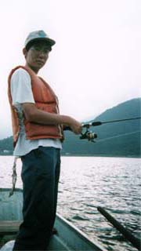
市川君、五十嵐君、石引君、秋山君と僕の５人で２回目の突撃を してきました。これは僕自身２回目の釣りだったりします。 道具は中学の時に買って押入で寝ていたものを出して来ました。 始めは本当に釣れるのか心配でしたが、師匠の奥義があるから大丈夫。 ※注：このファイルには多くのコリ語が使用されています。
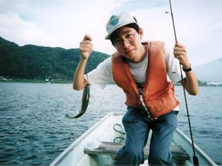
一匹目らしい。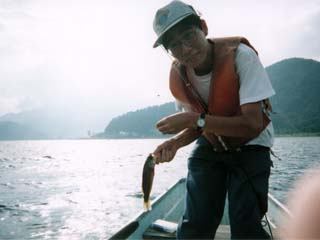
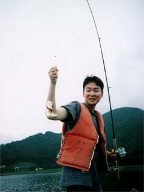
一匹目らしい。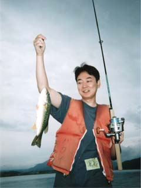
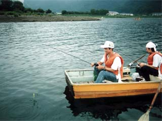
そ、それは何？！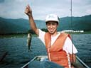
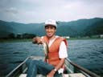
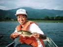
奥義も使わないで、なんてすごいんだー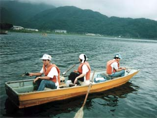
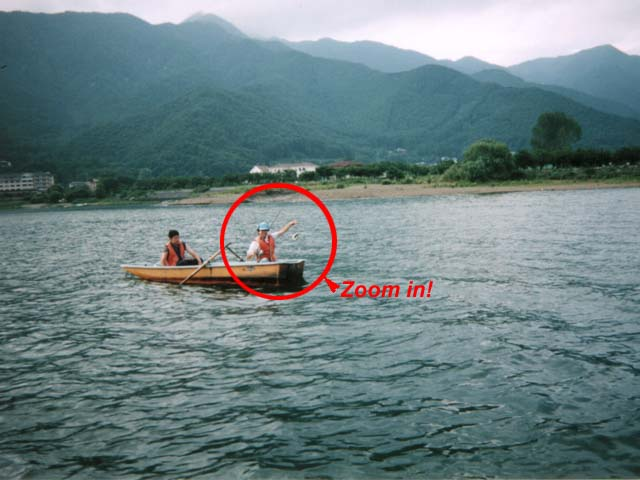
午後、ついに秋山君も釣れたらしい！ でもここからじゃとーくて良く見えないよー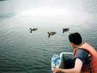
あ、だっくん発見！